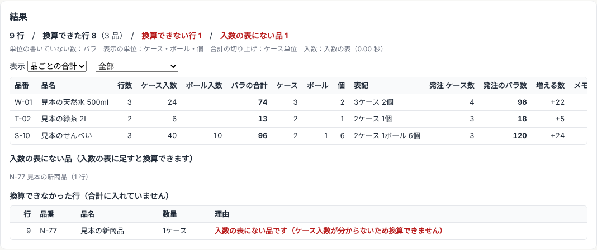

ケース・バラの数の換算
受注・在庫・発注・入荷の表に「2ケース」「1ケース5個」「3ボール」「24」が混ざっていて、足し算できない。そんな表を、品ごとの入数（ケース入数・ボール入数）でバラの数にそろえるツールです。逆に、バラの数を「1ケース 2ボール 5個」の形に分けることもできます。
- 行ごとの換算：元の数量の書き方のまま読み、バラの数と、ケース・ボール・バラに分けた数を出します
- 品ごとの合計：同じ品の行を合計し、バラの合計とケース・ボール・バラの形を一覧に。ケース単位（ボール単位）に切り上げた発注の数も出せます
- 入数の表にない品・読めない数量は、行番号つきで一覧にします（合計には入れません）
ソフトのインストールは不要で、いつものブラウザで動きます。
お試し版はすべての機能を使えて、換算する表は先頭15行までです（入数の表は制限なし）。決済が終わると、そのまま製品版の画面に移動します。ブックマークしておけば何度でも使えます。

見本のデータ（架空の品）で作った例。品名は説明用のもので、実在の商品とは関係ありません。
こんなときに
- 受注の表に「2ケース」と「5本」が混ざっていて、品ごとの合計を電卓で出している
- 在庫はバラで数えたのに、発注はケース単位なので、何ケース頼めばよいかを1品ずつ割り算している
- 検品の前に、注文書（ケース）と納品書（バラ）の数の単位をそろえたい
- 入数の表に載っていない品（新しい品）を、換算の前に見つけたい
できること
- 数量の書き方：「2ケース」「1ケース5個」「1C3B4」「2cs+5」「3ボール」「1ケース・2ボール」「▲1ケース」（マイナス）「1.5ケース」（バラが整数になるとき）。全角・半角、大文字・小文字は区別しません。単位が別の列にある表（数量「3」・単位「ケース」）にも対応します
- 単位の呼び方：初めは ケース（ケ・CS・C/S・C・カートン など）、ボール（BL・B・中箱・内箱・インナー）、バラ（個・本・枚・袋・缶・P・PCS など）。呼び方は画面で足したり変えたりでき、表示に使う名前（例：「箱」）も変えられます
- 入数：別の「入数の表」（品番・品名・ケース入数・ボール入数）から品番で引き当て、なければ品名で引き当てます。換算する表の中に入数の列があれば、それを使います（入数の表と違うときはメモ）。「24入」「12個入り」の書き方も読みます
- 合計と切り上げ：品ごとのバラの合計を、ケース・ボール・バラに分けて表示。ケース単位・ボール単位に切り上げた発注の数と、切り上げで増える数を出せます
- 確かめやすく：入数の表にない品、分からない単位、読めない数量、バラが整数にならない数（例：入数24で0.3ケース）は行番号つきで一覧に。「1ケース30個」のようにバラが1ケース（1ボール）分以上ある行、ケース入数がボール入数で割り切れない品、入数の表で同じ品が違う入数で2回ある行もメモに出します
- 印刷と保存：品ごとの合計（済欄つき）と行ごとの換算を A4 で印刷。Excel ファイル（.xlsx、3シート）か CSV で保存できます。元の表のすべての列の後ろにバラの数を足した表も保存でき、他のソフトに取り込み直せます
- CSV（UTF-8・Shift_JIS）と Excel ファイル（.xlsx）を読めます。列は見出し（「品番」「商品コード」「JAN」「受注数」「発注数」「在庫数」「単位」「ケース入数」「入数」など）から自動で選び、違っていたら画面で選び直せます。Excel の表をコピーして貼り付けても使えます
できないこと（購入前にご確認ください）
- 入数は自分で用意していただきます。品ごとの入数を調べたり、メーカーの情報から取ってきたりはしません
- 単位は3段（ケース・ボール・バラ）までです。パレットなど4段以上の単位、重さ（kg）・長さ（m）の換算には対応しません
- 「箱」「パック」「ダース」は店によって意味が違うため、初めは単位に入れていません。使う場合は、呼び方の欄に足してください
- 受注ソフト・在庫管理ソフトとはつながりません。表を書き出して読み込み、保存した表を取り込み直してください
- 発注の数は、合計をケース（ボール）単位に切り上げるだけです。いくつ発注するべきかの判断はしません（在庫からの発注点の目安は 発注点チェックと発注書）
- スマートフォンでは操作しにくいため、パソコンでお使いください
Excel だけで計算するなら
ケースの数とバラの数が別の列（B 列にケース数、C 列にバラ数、D 列にケース入数）に分かれていれば、バラの数は
=B2*D2+C2
です。入数が別のシート「入数」（A 列に品番、C 列にケース入数）にあるなら、D 列に
=VLOOKUP(A2,入数!A:C,3,FALSE)
と入れて引き当てます（見つからない品は #N/A になります）。逆に、E 列のバラの数をケースと端数に分けるには
=INT(E2/D2)（ケース） =MOD(E2,D2)（端数のバラ）
で、ケース単位に切り上げた数は =ROUNDUP(E2/D2,0) です（29本・入数24 → 1ケースと5本、切り上げると2ケース）。
このツールが向いているのは、「1ケース5個」のように1つのセルに単位と数が書かれている、ケース・ボール・バラの3段がある、同じ品の行を合計してから切り上げたい、入数の表にない品を先に見つけたい、といったときです。セルの中の文字から数と単位を取り出す式は長くなり、書き方が少し違うだけで計算が合わなくなります。
よくある質問
| データはどこかに送られますか？ | 送られません。読み込み・計算・印刷・保存はすべてお使いのブラウザの中で行います。単位の呼び方などの設定だけをブラウザに保存し、表の中身は保存しません。 |
|---|---|
| ボールのない品はどうしますか？ | 入数の表のボール入数を空欄にしてください。その品はケースとバラだけで表示します。 |
| マイナスの数（返品・戻し）はどうなりますか？ | 「-2ケース」「▲1ケース」はマイナスのバラの数として合計に入ります。切り上げは、合計がプラスのときだけ行います。 |
| 何行まで使えますか？ | 製品版は行数の制限はありません（5万行・2,000品で1秒以内に計算できることを確かめています）。画面の一覧は500件まで表示し、全部は印刷・保存に入ります。 |
安心してお使いいただくために
- 表はお使いのブラウザの中だけで処理し、サーバーには送信しません
- 動作環境：最新版の Chrome・Safari・Edge・Firefox（パソコン）
- 説明どおりに動かない場合は、ご購入から7日以内にご連絡いただければ返金します
ケースとバラをそろえたあとの注文と納品の突き合わせは 入荷の検品の照合、品ごとに数を合計して棚の順に並べるなら ピッキングリストと仕分け表 もあります。